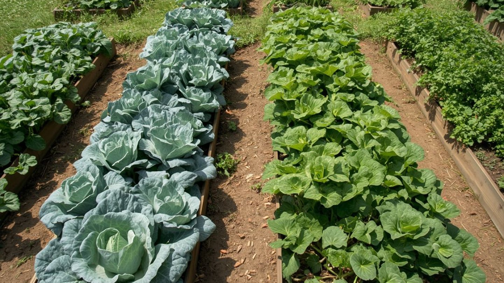

Fruchtfolge im Gemüsebeet: der einfache 4-Jahres-Plan
Wenn die Tomaten jedes Jahr am selben Platz stehen und trotzdem von Jahr zu Jahr schwächer werden, liegt es selten an der Pflege.
Wer dieselbe Kultur immer wieder auf dasselbe Beet setzt, macht drei Dinge auf einmal: Er zieht einseitig dieselben Nährstoffe ab, reichert die pflanzenspezifischen Krankheitserreger im Boden an und lässt bodenbürtige Schädlinge überwintern. Das nennt man Bodenmüdigkeit. Die Lösung ist kein Dünger, sondern ein Wechsel – die Fruchtfolge.
Zwei Regeln – mehr ist es im Kern nicht
1. Wechsle die Nährstoff-Klasse. Gemüse teilt sich danach, wie viel es dem Boden abverlangt: Starkzehrer plündern, Schwachzehrer begnügen sich, Leguminosen geben sogar zurück. Auf einen Starkzehrer folgt ein Mittel-, dann ein Schwachzehrer, dann eine Bodenkur.
2. Wechsle die Pflanzenfamilie. Krankheiten und Schädlinge sind meist auf eine Familie spezialisiert. Folgt auf Kohl wieder Kohl (beides Kreuzblütler), findet die Kohlhernie ein gedecktes Bett. Deshalb: keine Pflanze aus derselben Familie zweimal hintereinander am selben Ort – idealerweise drei bis vier Jahre Pause.
Die vier Zehrer-Klassen
| Klasse | Bedarf | Beispiele |
|---|---|---|
| Starkzehrer | sehr hoch | Tomate, Gurke, Zucchini, Kürbis, Kohl, Kartoffel, Sellerie |
| Mittelzehrer | mittel | Möhre, Rote Bete, Zwiebel, Lauch, Kohlrabi, Salat, Mangold, Fenchel |
| Schwachzehrer | gering | Kräuter, Radieschen, Feldsalat, Rucola, Erbse*, Bohne* |
| Gründüngung / Leguminosen | reichern an | Klee, Lupine, Phacelia, Erbsen & Bohnen (binden Stickstoff) |
* Erbsen und Bohnen sind Schwachzehrer und Stickstoffsammler zugleich – sie hinterlassen den Boden besser, als sie ihn vorfinden.
Der 4-Jahres-Wechsel in der Praxis
Teile deine Fläche in vier Bereiche und lass jede Kultur einmal im Kreis wandern. Was dieses Jahr in Beet 1 stand, steht nächstes Jahr in Beet 2.
| Jahr | Beet 1 | Beet 2 | Beet 3 | Beet 4 |
|---|---|---|---|---|
| 1 | Starkzehrer | Mittelzehrer | Schwachzehrer | Gründüngung |
| 2 | Gründüngung | Starkzehrer | Mittelzehrer | Schwachzehrer |
| 3 | Schwachzehrer | Gründüngung | Starkzehrer | Mittelzehrer |
| 4 | Mittelzehrer | Schwachzehrer | Gründüngung | Starkzehrer |
So bekommt jedes Beet nur alle vier Jahre denselben Starkzehrer – und jedes Jahr einmal die Erholungsphase durch Gründüngung, die Stickstoff bindet und den Boden lockert.
Die Faustregel für alle, die es einfacher wollen
Wenn dir vier Beete zu viel Buchhaltung sind, reicht ein Satz: Merk dir, wo im Vorjahr die hungrigen Kulturen standen – und setz dort dieses Jahr etwas Genügsames hin. Tomate → Bohne, Kohl → Salat, Kartoffel → Erbse. Schon dieser einfache Wechsel verhindert die meisten Probleme.
Fruchtfolge und Mischkultur ergänzen sich: Die eine ordnet, was übers Jahr nacheinander auf einem Beet wächst, die andere, was gleichzeitig nebeneinander steht.
Hortini merkt sich über die Jahre, was auf jedem Beet stand, und warnt dich, wenn dieselbe Pflanzenfamilie zu früh zurückkehrt – die Fruchtfolge führst du nicht mehr im Kopf.
Kostenlos ausprobieren